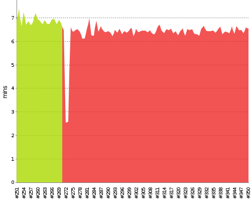

Skip to content
This site is a static archive, we moved to
Travis & GitLab CI
-
[Issue]
DISABLE AUTO REFRESH
Jenkins
P_Aegir_Puppet_Module_functional_test_Aegir2-backports
Back to Dashboard
Status
Changes
trend
W
Description
%
Build stability: All recent builds failed.
0
Build History
x
#350
May 15, 2016 2:43 AM
#349
May 14, 2016 2:43 AM
#348
May 13, 2016 2:43 AM
#347
May 12, 2016 2:43 AM
#346
May 11, 2016 2:43 AM
#345
May 10, 2016 2:43 AM
#344
May 9, 2016 2:43 AM
#343
May 8, 2016 2:43 AM
#342
May 7, 2016 2:43 AM
#341
May 6, 2016 2:43 AM
#340
May 5, 2016 2:43 AM
#339
May 4, 2016 2:43 AM
#338
May 3, 2016 2:43 AM
#337
May 2, 2016 2:43 AM
#336
May 1, 2016 2:43 AM
#335
Apr 30, 2016 2:43 AM
#334
Apr 29, 2016 2:43 AM
#333
Apr 28, 2016 2:43 AM
#332
Apr 27, 2016 2:43 AM
#331
Apr 26, 2016 2:43 AM
#330
Apr 25, 2016 2:43 AM
#329
Apr 24, 2016 2:43 AM
#328
Apr 23, 2016 2:43 AM
#327
Apr 22, 2016 2:43 AM
#326
Apr 21, 2016 2:43 AM
#325
Apr 20, 2016 2:43 AM
#324
Apr 19, 2016 2:43 AM
#323
Apr 18, 2016 2:43 AM
#322
Apr 17, 2016 2:43 AM
#321
Apr 16, 2016 2:43 AM
Timeline
Build Time Trend

Build
Duration